Using In Game Tool
This page describes the In-Game Tool provided by VotanicXR SDK and how to set the Tool with Unity Inspector or API.
Use In Game Tool
VotanicXR has provided seven tools, they are Wand, Teleport, Glove, Magnifier, Reporter, Brush and Measurer. Detail usage will be described in In Game Tool.
Player may choose different tools in the In-Game Menu.
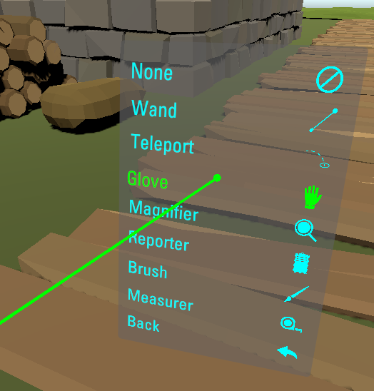
Switch the Game Tool
The V Gear_Controller (Script) component of vGear > Frame > Controller prefab and its child gameObjects are controlling the In-Game Tool. The Default Tool is the tool be used when the game start.
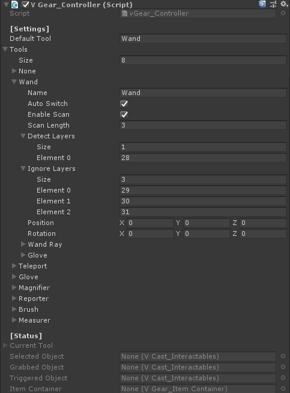
Without using the In-Game Menu, the tool can be changed through API as below.
void Update(){
// Set the tool into Brush when key B is up
if (vGear.Input.KeyboardUp(KeyCode.B))
{
vGear.controller.SetTool("Brush");
}
}
Besides, the tool will be changed by scanning based on the follow settings in inspector. Go to list [Settings] > Tools, there are settings for each tool. The options Auto Switch and Enable Scan, and the layer List Detect Layers saved the scanning setting of current tool.
When Auto Switch of a tool is enable, the tool will switch to first tool scanned with the gameObjects within Scan Length whose layer stored in Detect Layers. The tools will be scanned if the tool enable Enable Scan.
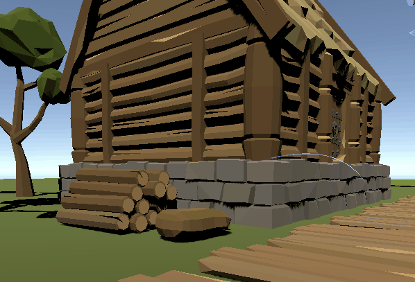
Detecy Layers also controlls the object can be interacted or not, and its priority is lower than Ignore Layers.The meaning of Ignore Layers ignored are different for each tools, will be introduced in later sections.
Configurate Game Tools
This section introduces the basic feature of tools for development, detail of the components please go to API References.
Wand
Wand is the basic tool to interact with interactables, default value of the Default Tool is this tool. The settings such as response color and length of the Wand can be changed in V Gear_Wand (Script) through Unity Inspector and API.
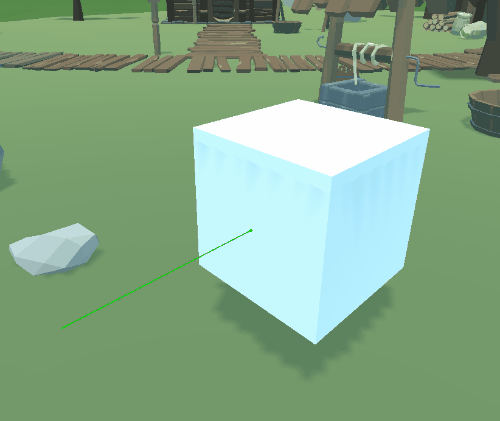
Teleport
Teleport is a tool to teleport around, detail is decribed in Locomotion.
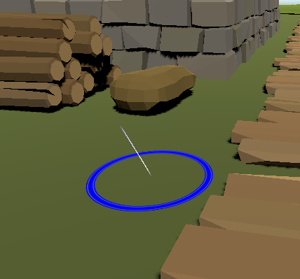
By default setting of the prefab, the tool will be switch between Teleport and Wand when user turn up or down the controller, this is because the Auto Switch and Enable Scan are enabled, the tool will scan the floor instantiated by Start Point to switch.
Glove
Glove is a tool to interactact with interactables at a shorter range, it works with the game using [Role System] only. Glove provides the animation with the sensor such as Vive controller.
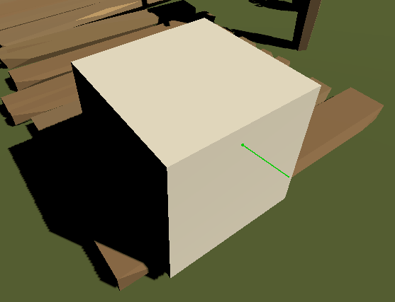
The Ignore Layers of this tool is to ignore the object to prevent interaction.
Wand and Glove can be displayed with other tools at the same time by enable the Display at the Tool list of V Gear_Controller (Script).

Magnifier
Magnifier is a tool to magnify the objects for view. The detail such as camera angle and zoom size can be changed in V Gear_Magnifier (Script).
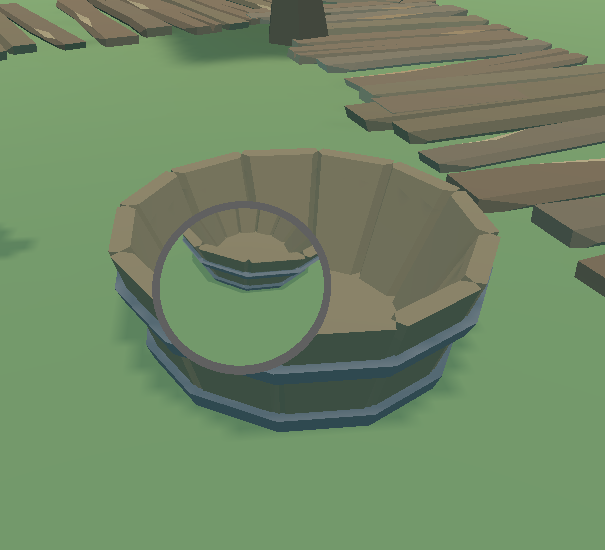
The Ignore Layers of this tool is to ignore the object display in the Magnifier.
Reporter
Reporter is a tool include a camera and remark UI, to save the image captured with notes.
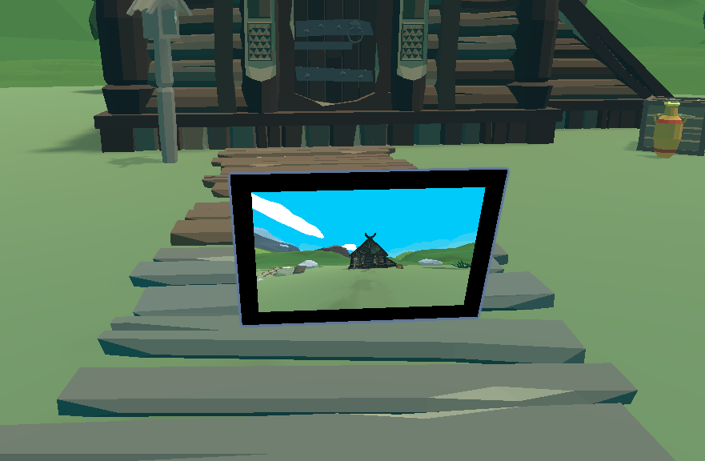
After Trigger is pressed, the Reporter will leaved a capture at the game.
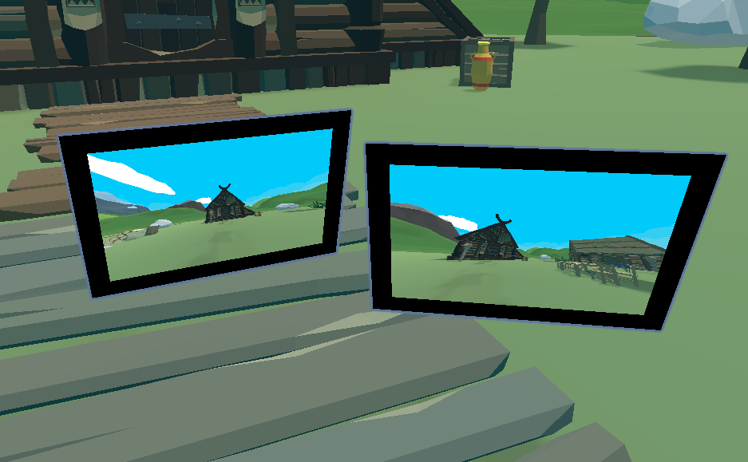
The Reporter leaved can be interacted to remark or remove, and the images and remarks will be saved as pdf format.
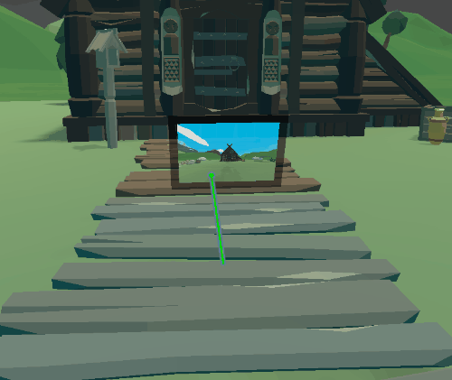
The Ignore Layers of this tool is to ignore the object captured with this layer.
Brush
Brush is a tool to draw simple mesh on VR 3D space. When Brush tool is switched, user can hold the Trigger key to draw mesh. The detail below can be changed in V Gear_Magnifier (Script).
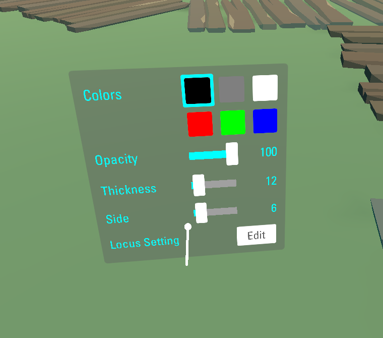
The mesh can be undo by receiving command brush=remove and be clear by receiving command brush=clear.
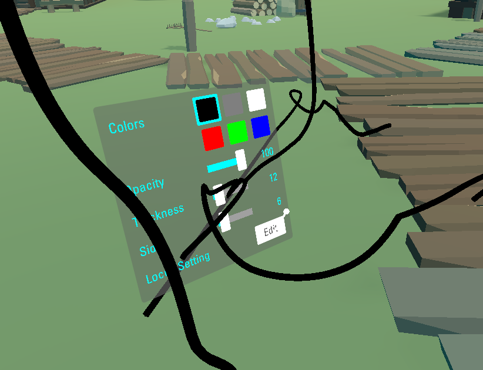
Press the selected color at the panel, color can be edited based on RGBA. 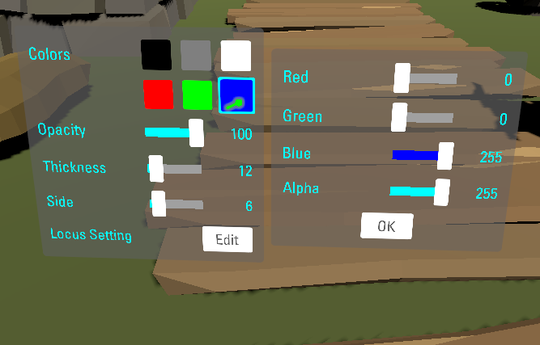
Press the Locus Setting of the panel, locus setting such as interactable type and physic properties of mesh can be changed.
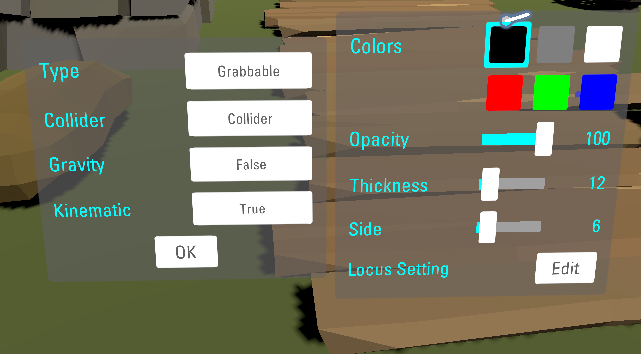
The Ignore Layers of this tool is to ignore the object to prevent interaction.
Measurer
Measurer is a tool to create virtual measurement.
The measurement can be undo by receiving command measurer=remove and be clear by receiving command measurer=clear.
The Continuity can be toggled by receiving command measurer=continuity , this setting and others such as unit and decimals can be changed through Unity Inspecter and API.
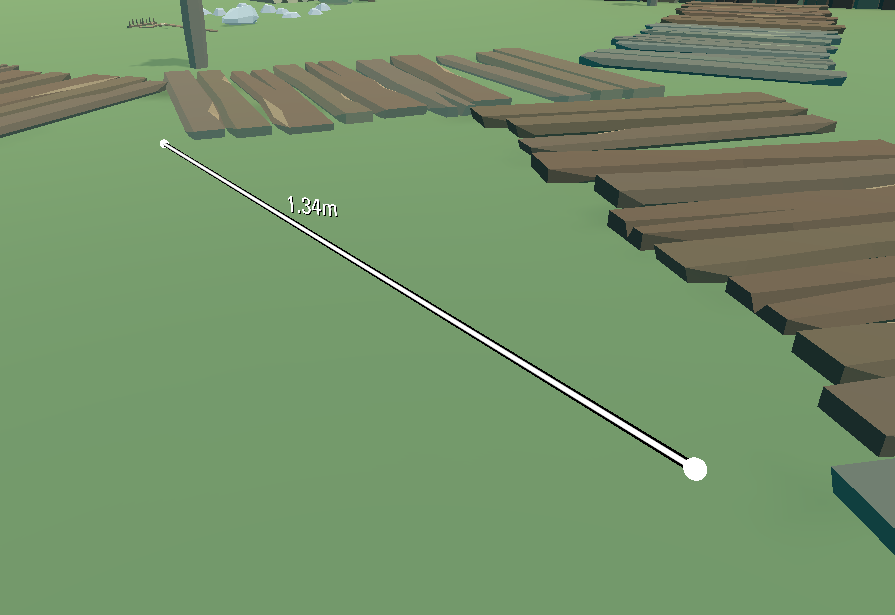
The point of the measurement can be grabbed.
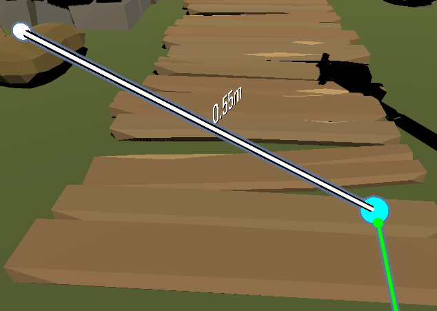
The measurement will be removed if the wand trigger it.
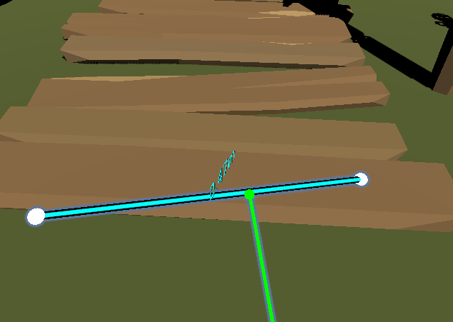
When the Continuity is disabled, the measurement will be stoped after a Trigger received, else it will continue the measurement by connecting them.
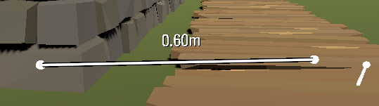
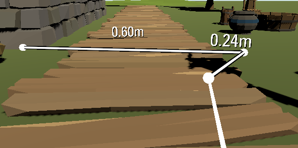
The Ignore Layers of this tool is to ignore the object to prevent interaction.